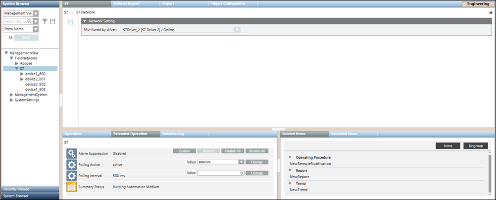
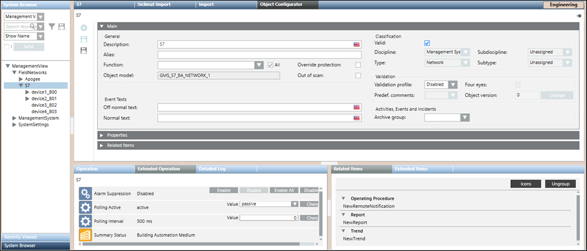
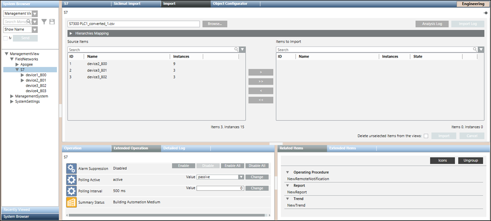
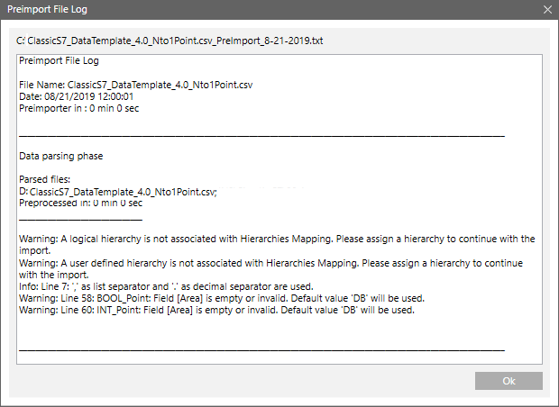
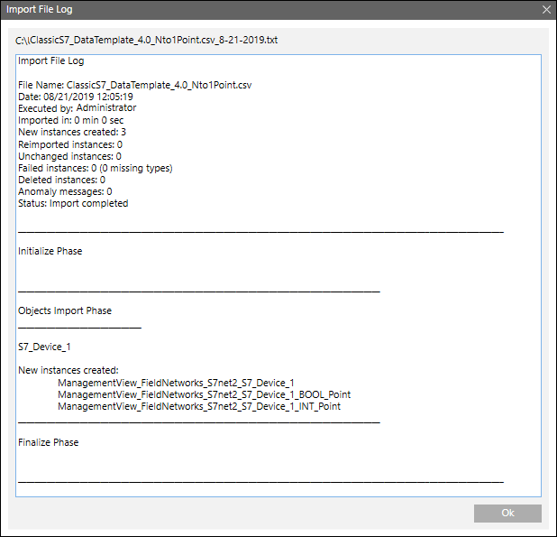
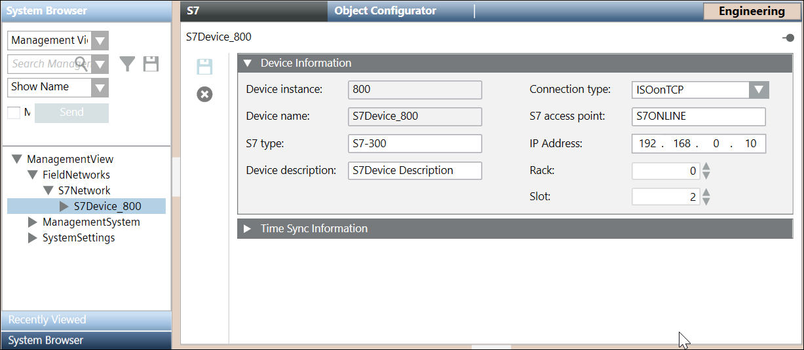
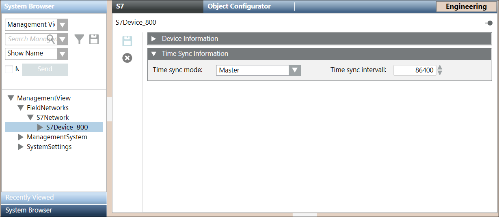

S7 Device Integration Workspace
The Device Integration Workspace provides information on the UI components for creating drivers, networks, device connections, and so on.
Standard S7 Driver Workspace
The details of the Standard S7 Driver display in the Object Configurator tab.

|
S7 PLUS Toolbar | ||
Icon | Name | Description |
| Delete object | Deletes the Standard S7 driver. You must not delete the driver if it is monitoring a network.
|
S7 Network Workspace
The S7 network workspace allows you to configure the network settings such as associating the Standard S7 driver to the network and saving the association. The properties associated with the selected network display in the Operation tab or Extended Operation tab. You can also change the value of the poll interval. By default, this value is set to 0 ms. In order to delete the network, you must click Delete that displays in the toolbar in the Object Configurator tab.
that displays in the toolbar in the Object Configurator tab.
You can associate the driver to the network by selecting the driver from the Monitored by driver drop-down list.


S7 Device Importer Workspace
The S7 Importer allows you to manage the import of field data (engineering objects) described in the S7 csv file. You can import the field data (engineering objects) described in S7 configuration files (csv file) from the S7 device importer workspace.

Import Fields | |
Item | Description |
Browse | Displays the Open dialog box and allows you to select a file to import. The path of the selected file appears in the field. |
Source Items | Displays a preview of all the objects available in the selected csv file. These objects are identified by the following:
|
Imported Items | Displays a preview of all the objects selected for import. These objects are identified by the following:
NOTE: |
Search | Allows you to apply a search filter to the content that displays in the Source Items or Imported Items list. |
Delete unselected items from views | Allows you to specify whether or not, during the import, all the items available in the views, but not present in the file to import, must be deleted. If you check this option, any items relevant to the objects are also deleted (text groups included). |
Import | Starts the import process. NOTE: |
Cancel | Aborts the import process. NOTE: |
Analysis Log | Displays the Preimport File Log dialog box with the errors encountered during pre-processing phase of the csv file. NOTE: |
Import Log | Displays the Import File Log dialog box with the details of the import process. NOTE: |
Preimport File Log
You can view the errors encountered during the pre-processing of the csv file from the Preimport File Log dialog box that displays by clicking the Analysis Log button available above the Items to Import field. This Analysis Log button is enabled only when the pre-processing is complete.

Import File Log
You can view the errors encountered during the import of the devices and points from the Import File Log dialog box that is displayed by clicking the Import Log button above the Items to Import field. This button is enabled only when the import is complete.

Re-Import the S7 Objects
When re-importing S7 data using a CSV file, the re-import applies to the S7 devices and their field points referred to in the CSV file.
The re-import operation is done in a similar way as the import, except that the pre-existing S7 objects are updated as follows:
- Creating new data points.
- Updating existing data points.
- Deletion existing data points (only if the Delete unselected items from the views check box is selected).

NOTE:
Deleting the S7 points results in deleting them from all the hierarchies in other views.
This operation also causes the Management View hierarchy to add objects and internal nodes (points), and delete internal objects. The import process deletes any S7 devices that are no longer present in the CSV file (only if the Delete unselected items from the views check box is selected).
Dropping of Workstation Alarms during Re-import
Workstation alarms can be dropped or removed from any existing S7 point by re-importing the same point using a CSV file that does not contain the alarm entry for the corresponding point.
A workstation alarm entry is defined by the AlarmClass, AlarmType, AlarmValue, EventText and NormalText fields. You must manually delete these fields that correspond to the point for which you want to drop the workstation alarms.
S7 Device Information Expander
The S7 Device Information Expander provides information on the imported S7 device.

Item | Description |
Device instance | Instance of the S7 device |
Device name | Name of the imported S7 device |
S7 type | Type of the S7 device. |
Device description | Description of the S7 device |
Connection type | ConnectionType of the S7 device. It can have either of the following values: |
S7 access point | Name of the access point of the S7 device. |
IP Address | IP address of the S7 device |
Rack | Number of the rack on which the CPU of interest resides. On changing this device property, the connection with the CPU is re-established. |
Slot | Number of the slot on which the CPU of interest resides. On changing this device property, the connection with the CPU is re-established. |
S7 Time Sync Expander

Item | Description |
Time sync mode | The Time sync mode determines if and how the current time on the PLC will be accessed and/or modified. It can have the following values: |
Time sync interval | Determines how often the current time is read from the PLC or written to the PLC. |